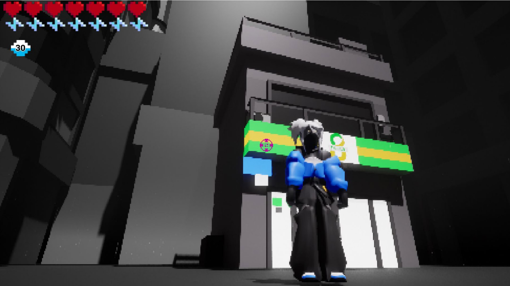
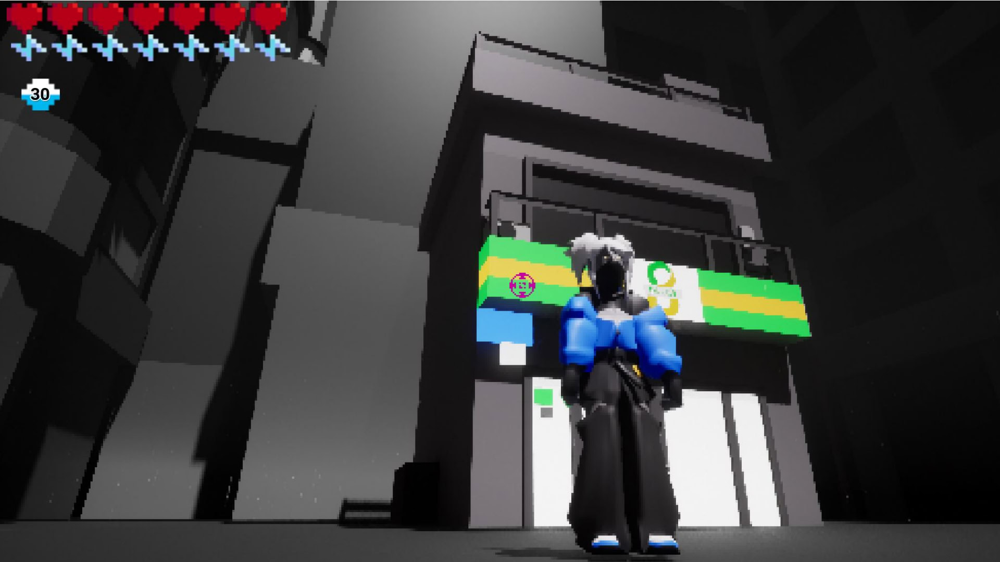
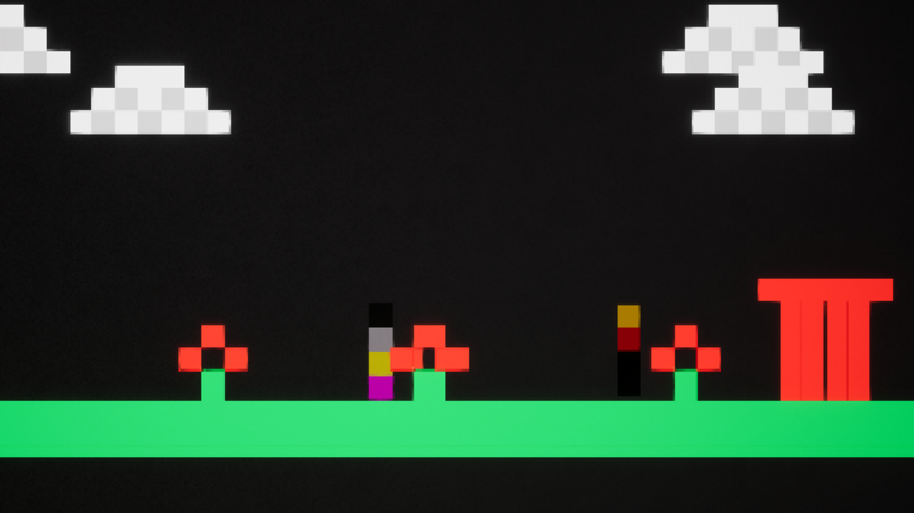
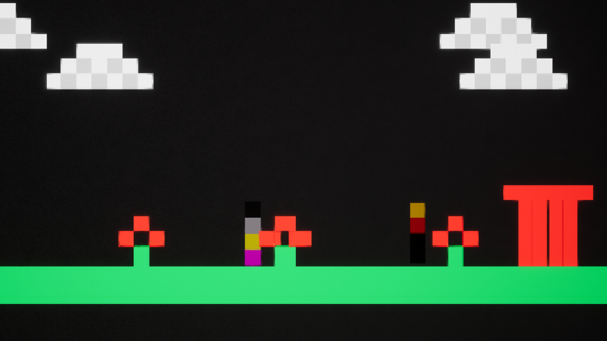
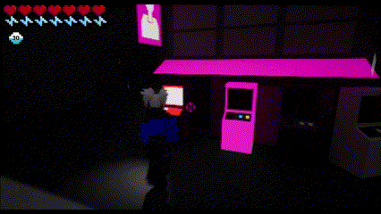
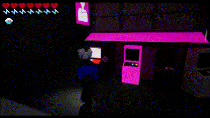
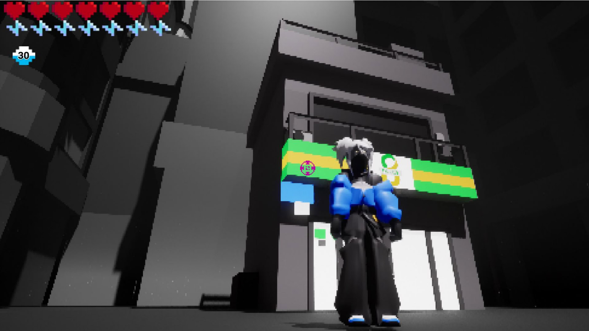
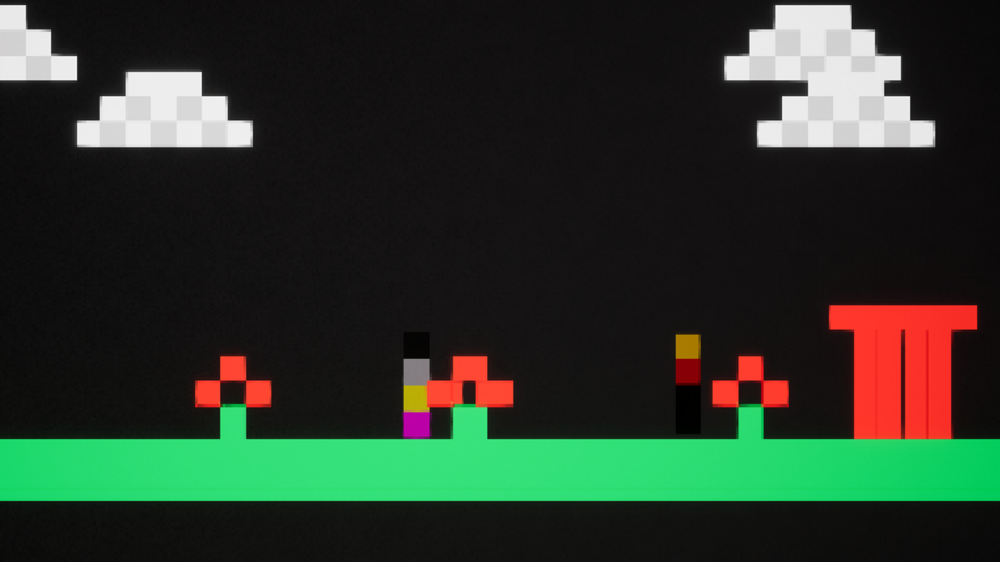
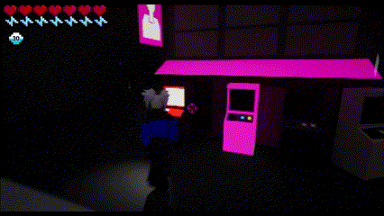

Gallery
Images


 



 



Gifs


 


The games theme was to create something in the style of a retro game and an additional bonus for using a limited colour palette of 8. We opted for making something low resolution via a shader in the style of classic PS1 era titles, with an additional 2D segment using varying eras of pixel art. For this I used Unreal Engine 5 in Japanese.
We also wanted to try and make a monochrome game as this would also allow us to aim for the challenge, but additionally we wanted the important elements to be in colour. We also have a way to transition certain elements to be in colour or not in colour during runtime, primarily the oni's during combat.
The story and games overall theme was based on my love for Japan and recent holiday, we also decided to reference a certain shop in Japan. I also based it on the festival Setsubun, which in tradition people would throw soybeans to scare away Oni. That's why the character can also throw cans of beans, but their main ammo is gatcha. I also wanted to make the Oni inspired by Japanese businessmen, so they wear suits and carry briefcases. As well as arcades and various Japanese retro games both Ps1 era and prior were a big inspiration.
These three are boss Oni's their default functionality is the same as the red's however, they have a few additions.
Triggers when bosses have 50% or less health.



Please check out my team's work:
Art: